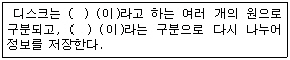
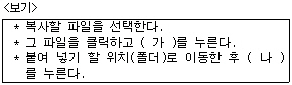
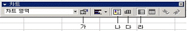
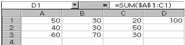
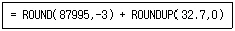
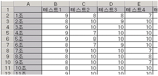
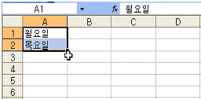

컴퓨터활용능력-3급(폐지) (2005-10-09 기출문제)
1과목: 컴퓨터 일반
1. 다음의 ( )안에 들어갈 말이 순서대로 맞게 표현된 것은?

- 섹터 트랙
- 섹터 블록
- 트랙 섹터
- 트랙 블록
(정답률: 79%)

2. 아래 <보기>에는 Windows에서 “복사"해서 ”붙여 넣기"하는 절차가 적혀있다. ㈎와 ㈏의 빈칸에 해당하는 단축키는 어느 것인가?

- ㈎ [Ctrl]+[C] ㈏[Ctrl]+[V]
- ㈎ [Ctrl]+[O] ㈏[Ctrl]+[Y]
- ㈎ [Ctrl]+[C] ㈏[Ctrl]+[P]
- ㈎ [Ctrl]+[Z] ㈏[Ctrl]+[V]
(정답률: 98%)
3. 특정 서비스를 제공하는 통신망(network)으로, 일반적인 공중 네트워크에서는 쉽게 찾을 수 없는 정보나 서비스를 유료로 제공하는 통신망은?
- ISDN
- LAN
- WAN
- VAN
(정답률: 60%)
4. 다음 중 컴퓨터의 기억용량 단위를 작은 것에서 큰 순서로 바르게 나열한 것은?
- KB - MB - GB - TB - PB
- KB - MB - TB - PB - GB
- KB - MB - PB - GB - TB
- KB - MB - GB - PB - TB
(정답률: 92%)
5. 사이버 주식거래를 위해서 증권사 홈페이지에 접속해서 증권사에서 제공하는 홈트레이딩 소프트웨어를 내 컴퓨터로 가지고 왔다. 다음 중 이러한 행위를 지칭하는 단어는?
- 다운로드(Download)
- 업로드(Upload)
- 해킹(Hacking)
- 컴파일(Compile)
(정답률: 84%)
6. 한글 Windows에서 많은 작업이 동시에 수행될 수 있다. 이 때 열려진 창(작업 프로그램)을 전환할 수 있도록 목록을 보여주는 단축키는 무엇인가?
- [Alt]+[F4]
- [Alt]+[Tab]
- [Ctrl]+[F4]
- [Ctrl]+[Tab]
(정답률: 88%)
7. 다음 중 컴퓨터 바이러스에 대한 설명으로 옳지 않은 것은?
- 한번 감염된 파일을 치료시 같은 종류의 바이러스에 다시 감염되지 않는다.
- 바이러스의 종류에 따라 나타나는 증상도 다양하다.
- 강력한 바이러스라도 CD-ROM에 수록된 자료는 손상시키지 못한다.
- 전자우편 등 인터넷을 통한 감염도 일어난다.
(정답률: 77%)
8. 다음은 한글 Windows에서 파일의 삭제에 관한 설명이다. 옳지 않은 것은?
- 삭제할 파일을 선택한 후 [Delete] 키를 누른다.
- 삭제할 파일을 선택한 후 휴지통 아이콘으로 끌어다 놓는다.
- 삭제할 파일을 선택한 후 [Alt]+[Del]을 눌러 삭제할 수 있으며, 이 파일은 복원할 수 없다.
- 삭제할 파일을 선택한 후 마우스 오른쪽 버튼을 누른 후 [삭제]를 선택한다.
(정답률: 85%)
9. 웹 브라우저를 통하여 여러 웹 사이트를 검색하다가 다음에 다시 방문하고 싶은 사이트를 발견하면 그 주소를 등록해 두었다가 다음에 쉽게 다시 연결할 수 있도록 하는 기능을 무엇이라고 하는가 ?
- 기록(History)
- 즐겨찾기(Bookmark)
- 캐싱(Caching)
- 쿠키(Cookie)
(정답률: 94%)
10. 현재 실행중인 윈도우에 대하여 여러 가지 정보를 알려주는 것은?
- 제목줄
- 상태표시줄
- 메뉴줄
- 도구줄
(정답률: 86%)
11. 한글 Windows에 관한 다음 설명 중 가장 옳지 않은 것은?
- 왼손잡이를 위해 마우스의 단추 설정을 변경할 수 있다.
- 마우스를 사용할 수 없게 되었을 때 키보드로 마우스를 대용할 수 있다.
- [내 컴퓨터]-[프린터]에서 글꼴 및 글꼴의 크기를 설정할 수 있다.
- 마우스의 두 번 누르기 속도를 느리게 하거나 빠르게 조절할 수 있다.
(정답률: 69%)
12. 컴퓨터의 특징을 나타내는 다음 용어들 중 “다른 컴퓨터나 매체에서 작성한 자료를 공유하여 처리할 수 있다”는 의미로 가장 적절하게 사용될 수 있는 것은?
- 고속성(High speed)
- 정확성(Accuracy)
- 신뢰성(Reliability)
- 호환성(Compatibility)
(정답률: 75%)
13. 한글 Windows의 윈도우 탐색기를 실행 시키는 방법에 해당하지 않는 것은?(단, 한글 Windows는 C:＼Windows에 설치된 것으로 가정한다)
- 빠른실행 도구모음에 Windows 탐색기의 아이콘이 있으면 아이콘을 클릭한다.
- [시작]-[실행]을 선택한 다음 실행 대화 창에서 C:＼Windows＼explorer.exe를 입력하고 확인 버튼을 누른다.
- 바탕화면에 Windows 탐색기의 바로가기 아이콘이 있으면 아이콘을 더블 클릭한다.
- 바탕화면의 빈 부분에서 마우스 오른쪽 버튼을 눌러 나타난 단축메뉴에서 Windows 탐색기를 선택한다.
(정답률: 51%)
14. 인터넷에 관한 설명 중 거리가 먼 것은?
- 세계의 컴퓨터 통신망들을 상호연결한 통신망이다
- 1969년 미국 국방성에서 군사용으로 만든 ARPANET이 시초이다.
- 인터넷에 접속된 모든 컴퓨터는 자기 자신만의 고유한 주소를 가지며 접속시마다 개인이 자유롭게 지정할 수 있다.
- 하이퍼텍스트를 기반으로 멀티미디어 데이터를 사용할 수 있도록 한 서비스를 WWW라고 한다.
(정답률: 77%)
15. 한글 Windows에서 한번에 하나 이상의 파일을 복사, 이동, 삭제하기 위하여 파일들을 선택하는 방법으로 올바르지 않은 것은?
- 선택하려는 파일들이 같은 폴더 안에 있으면 폴더 자체를 끌어다 다른 폴더나 드라이브에 놓으면 된다.
- 같은 폴더 안에서 연속된 여러 개의 파일들을 선택하려면, 첫번째 파일을 클릭하고 [Shift] 키를 누른 채 마지막파일을 클릭하면 그 사이의 모든 파일이 선택된다.
- 같은 폴더 안에서 연속된 파일들을 선택하려면, 마우스를 선택하고자 하는 파일들 주변을 둘러서 끈다. 마우스를 끄는 동안 그 사이의 모든 파일들이 선택된다.
- 연속되어 있지 않은 여러 개의 파일들을 선택하려면 [Alt] 키를 누른 채 각 파일들을 누른다.
(정답률: 78%)
16. 정보통신의 발달로 인해 정보사용에 있어 시간과 공간의 장벽이 무너지고 세계가 하나로 되어 가고 있다. 따라서 정보 제공과 활용에 있어 서로의 인권을 존중하고 정보질서를 잘 준수해야 하는데, 다음 중 반 윤리적이며 범죄 행위에 해당되지 않은 것은?
- 음란, 폭력물 홍보 및 판매
- 정보검색 및 공개 소프트웨어 파일 다운로드
- 상용프로그램의 업로드
- 컴퓨터 바이러스 개발 및 유포
(정답률: 75%)
17. 다음 용어 설명 중 틀린 것은 ?
- Energy Star : 환경오염을 줄이고 모든 자원을 아껴야 한다는 의식에서 컴퓨터 본체와 모니터의 소비 전력이 30W 이하인 절전형 제품에 대해 미국환경보호국(EPA)이 인증하는 표시
- UPS(Uninterruptible Power Supply) : 정전이 발생했을 경우 전원 공급을 일정시간 동안 유지시켜서 사용자가 작업 중인 데이터를 손실하지 않도록 해 주는 장치
- CD-ROM : 사용자가 내용을 지우거나 다시 기록할 수 없는 읽기 전용의 CD(Compact DISK)
- IDE(Intelligent Drive Electronics) : 하드디스크를 최대 4개까지 연결할 수 있는 방식
(정답률: 57%)
18. 다음 중 기억 장치의 설명으로 올바른 것은?
- RAM : 주기억 장치로 비휘발성이며 읽기 쓰기가 가능하다.
- ROM : 주기억장치로 휘발성이며 펌웨어를 저장하는데 사용한다.
- 캐시메모리 : CPU와 주기억 장치 사이에서 데이터의 접근 속도를 빠르게 하기 위한 기억장치
- 자기 디스크 : 주기억 장치로 데이터를 반영구적으로 기억한다.
(정답률: 66%)
19. 다음 중 처리방식에 따른 컴퓨터의 분류가 아닌 것은?
- 범용컴퓨터
- 아날로그컴퓨터
- 하이브리드컴퓨터
- 디지털컴퓨터
(정답률: 77%)
20. 컴퓨터 통신망에서 파일을 전송할 때 파일 크기를 줄이는 방법으로 압축 기술을 사용한다. 파일 압축에 대한 설명으로 옳지 않은 것은?
- 압축 기술의 원리는 반복되는 자료를 약속된 기호로 줄여 표기하는 것이다.
- JPG와 같은 모든 그림 파일을 압축 유틸리티를 이용하면 파일 크기가 40% 이하로 줄어든다.
- 파일을 압축하려면 압축 프로그램이 있어야 한다.
- 압축 파일의 종류로는 zip, rar, arj 등이 있으며 이들은 각자 고유
(정답률: 61%)
2과목: 스프레드시트 일반
21. 아래의 차트 도구 모음의 단추 중 차트의 차트 영역을 선택했을 때와 그림 영역을 선택했을 때 그 기능이 달라지는 것은?

- 가
- 나
- 다
- 라
(정답률: 69%)
22. 작성된 통합문서 파일의 보호를 위하여 암호 설정/해제 기능을 포함하고 있는 파일 메뉴는?
- 다른 이름으로 저장
- 작업 상태 저장
- 쪽 설정
- 등록 정보
(정답률: 71%)
23. 다음은 단축키에 대한 부분이다. 틀린 것은?
- [Ctrl]+[Home] : 워크시트의 시작(A1 셀)부분으로 이동 하고자 할 때
- [Ctrl]+[X] : 데이터를 잘라내고자 할 때
- [Ctrl]+[V] : 데이터를 붙이고자 할 때
- [Ctrl]+[P] : 데이터를 복사하고자 할 때
(정답률: 78%)
24. 다음 중 숫자 데이터의 입력 형태에 관한 설명으로 틀린 것은?
- 숫자를 괄호로 둘러싸면(예: (3)) 음수로 인식한다.
- 숫자 앞에 - 기호를 입력하면 음수로 인식한다.
- 분수는 날짜 서식과 구분하기 위해 혼합형(예: 0 1/2)으로 입력한다.
- 숫자에 2,324와 같이 콤마를 입력하면 안 된다.
(정답률: 74%)
25. 셀 데이터의 정렬은 특정 셀 서식을 지정하지 않은 상태에서 가로(수평) 방향은 기본적으로 표준으로 문자열 맞춤이 설정되어 있다. 이때 세로(수직) 방향은 기본적으로 다음 어느 방향을 기준으로 문자열 맞춤이 설정되어 있는가?
- 위쪽
- 가운데
- 아래쪽
- 양쪽 맞춤
(정답률: 44%)
26. 다음 중 =ROUNDUP(10/6,6)의 결과 값은 어느 것인가?
- 1.66666
- 1.66667
- 1.666666
- 1.666667
(정답률: 66%)
27. 다음 시트에서 D1 셀에 수식 '=SUM($A$1:C1)'을 입력한 다음 D2 셀에 복사를 하였다 D2 셀에 나타난 값은 무엇인가?

- 120
- 220
- 180
- 150
(정답률: 57%)
28. [도구]→[보호]→[통합문서 보호]에서 보호할 대상을 구조와 창을 설정하였을 경우 틀린 것은?
- 보호가 설정되면 설정된 통합문서는 불러올 수 없다.
- [창]→[틀고정]을 설정할 수 없다.
- 시트를 삽입하거나 삭제할 수 없다.
- [창]→[나누기]를 설정할 수 없다.
(정답률: 58%)
29. 차트에 대한 설명이 틀린 것은?
- 3차원으로도 표시할 수 있다.
- 차트에서 표시되는 범례는 위치를 이동할 수 있다.
- 차트를 작성한 후 다른 유형의 차트로 변경할 수 있다.
- 차트마법사는 총 5단계이다.
(정답률: 81%)
30. 아래와 같은 수식의 결과 값으로 올바른 것은?

- 88033
- 88032.7
- 88032
- 87033
(정답률: 63%)
31. 다음 중 열의 너비와 행의 높이를 조절하는 방법의 설명으로 틀린 것은?
- 여러 개의 열을 동시에 동일한 크기로 조절하려면, 해당하는 열의 머리글을 모두 선택한 뒤 어느 한 열 머리글의 오른쪽 경계선에서 왼쪽 마우스를 눌러서 끌면 된다.
- 데이터의 크기만큼 열의 너비를 자동으로 조절하려면열 머리글의 오른쪽 경계선에서 더블 클릭하면 된다.
- 여러 개의 행이나 열의 너비를 가.과 같은 방법으로 조절할 때 숨기기가 되어 있는 행이나 열이 포함되어 있으면 숨겨진 행이나 열의 너비는 변하지 않는다.
- 가.과 같은 방법으로 여러 개의 열을 조절할 때 그 속에 병합된 셀이 포함되어 있더라도 정상적으로 조절이 된다.
(정답률: 61%)
32. 다음 중 조건부 서식에 대한 설명으로 잘못된 것은?
- 특정한 조건을 만족하는 경우에만 서식이 적용되도록 하는 기능이다
- 조건부 서식이 적용된 후 셀 값이 바뀌어 조건과 일치하지 않아도 셀 서식 설정은 해제되지 않는다.
- 조건은 3개까지 지정할 수 있다
- 위의 조건에 각각 다른 서식을 부여할 수 있다
(정답률: 66%)
33. 다음 중 엑셀에서 주어지는 '셀 구분선' 포함하여 워크시트를 인쇄하고자 할 때의 설정 사항으로 올바른 것은?
- [도구]-[옵션]을 실행하여 [화면 표시] 탭에서 ‘구분선’ 을 설정한다.
- [도구]-[옵션]을 실행하여 [화면 표시] 탭에서 ‘눈금선’ 을 설정한다.
- [파일]-[페이지 설정]을 실행하여 [시트] 탭에서 ‘눈금선’ 을 설정한다.
- [서식]-[시트]에서 ‘구분선’을 설정한다.
(정답률: 45%)
34. 완성된 차트에서 제목이나 범례 항목을 변경하고자 할 때 선택하는 단축메뉴는 어느 것인가?
- 항목서식
- 차트옵션
- 차트종류
- 차트영역
(정답률: 72%)
35. 워크시트를 인쇄하는데, 매 페이지마다 맨 위에 '컴퓨터활용능력시험' 이라는 말을 넣고자 한다. 이를 설정하는 쪽설정 옵션은?
- 쪽
- 머리글/바닥글
- 여백
- 시트
(정답률: 83%)
36. 다음 단축키와 설명이 맞지 않는 것은?
- [Ctrl]+[Z] : 찾기
- [Ctrl]+[H] : 바꾸기
- [Ctrl]+[X] : 잘라내기
- [Ctrl]+[V] : 붙여넣기
(정답률: 75%)
37. 다음 오류 값의 설명이 틀린 것은?(문제오류로 실제 시험장에서는 2,3번을 정답 처리한 문제 입니다. 여기서는 2번을 정답 처리 합니다.)
- ###### : 숫자 데이터의 길이가 셀 보다 큰 경우
- #DIV/! : 수식에서 값을 "0"으로 나누는 경우
- #NAME? : 배열식을 포함하는 범위와 행이나 열 수가 다른 배열식의 인수를 사용할 때
- #REF!: 셀 참조가 유효하지 않을 경우
(정답률: 78%)
38. 다음은 ‘원형' 그래프에 대한 설명으로 틀린 것은?
- Y값(축)을 가질 수 없다.
- 범례표시를 그림(원) 안쪽으로는 이동할 수 있다.
- [데이터 레이블] 값 표시를 지정(체크표시)하면 자동으로 백분율이 표시된다.
- 그래프를 구성하고 있는 조각을 1개씩 떼어낼 수도 있다.
(정답률: 46%)
39. 다음의 표에서 A열과 1행을 틀 고정하기 위한 명령을 실행할 때의 셀 선택으로 알맞은 것은?

- A1
- B2
- A1:B2
- 1행
(정답률: 61%)
40. 다음 아래의 시트에서 채우기 핸들을 끌었을 때 A3 셀에 입력되는 값으로 올바른 것은?

- 화요일
- 수요일
- 토요일
- 일요일
(정답률: 83%)